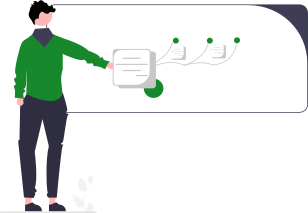

Objetivos do NAPNE

Criar espaços para discutir e implementar a convivência, diversidade, acessibilidade e inclusão educacional.


Pessoas com deficiência são aquelas que têm impedimentos permanentes, de longo prazo, temporários ou intermitentes de natureza física, intelectual/cognitiva ou sensorial, os quais, em interação com diversas barreiras, podem impedir sua participação plena e efetiva na sociedade em igualdade de condições com as demais pessoas. (Decretos nº 186/08 e nº 6.949/09)*

Transtorno do Espectro Autista é definido como deficiência persistente e clinicamente significativa da comunicação e da interação sociais, manifestada por deficiência marcada de comunicação verbal e não verbal usada para interação social; ausência de reciprocidade social e falência em desenvolver e manter relações apropriadas ao seu nível de desenvolvimento. (Lei nº 12.764/12)*

Estudantes com altas habilidades / superdotação demonstram potencial elevado em qualquer uma das seguintes áreas, isoladas ou combinadas: intelectual, acadêmica, liderança, psicomotricidade e artes. Também apresentam elevada criatividade, grande envolvimento na aprendizagem e realização de tarefas em áreas de seu interesse. (Fonte: site do MEC)*
O objetivo deste setor é assessorar o desenvolvimento do processo educativo oferecendo orientações, acompanhamentos, e, quando necessário, intervenções que visem promover não só a qualidade do ensino e da aprendizagem, mas também a permanência e conclusão escolar com êxito dos estudantes no IFSP, além de participar junto com a gestão escolar dos processos para tomada de decisões que melhorem a qualidade do ensino. Essa Coordenadoria realiza: Serviço Pedagógico, Serviço Social e Serviço Psicológico.
| Servidor(a) | Segunda | Terça | Quarta | Quinta | Sexta |
|---|---|---|---|---|---|
| Adeline Maria Borges Branco Gomes | 9h às 15h | 9h às 15h | 9h às 15h | 17h às 21h | 9h às 15h |
| Ana Carolina Steffen Figueiredo | 10h50 às 16h50 | 10h50 às 16h50 | 13h30 ás 19h30 | 13h30 ás 19h30 | 13h30 ás 19h30 |
| Carmen Izaura Molina Correa | 13h às 22H - Intervalo das 17h às 18h | 13h às 22H - Intervalo das 17h às 18h | 09h às 18H - Intervalo das 13h às 14h | Teletrabalho | Teletrabalho |
| Daniela Galera Castilho | 15h às 21h | 13h as 19h | 15h às 21h | 9h às 15h | 15h às 21h |
| Flávia Campello | 9h as 15h | 11h as 17h | 9h as 13h | 9h às 15h | 9h as 15h |
| Michele Oliveira da Silva | 9h as 15h | 10h as 16h | 9h as 15h | 18h30 as 22h30 | 9h às 15h |